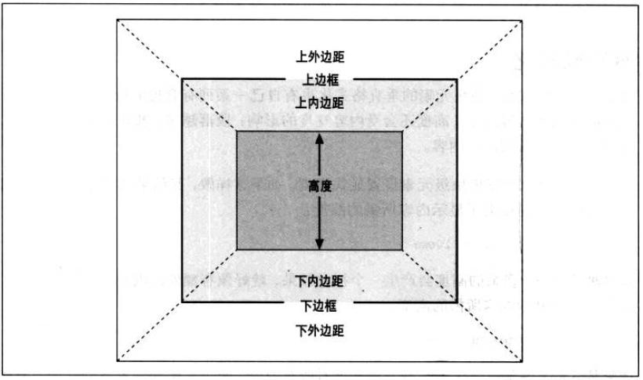

基础规则
垂直格式化的7个属性：margin-top、border-top、padding-top、height、padding-bottom、border-bottom、margin-bottom
height用于指定内容区的高度
height=50
可见区域包括 内容区、padding 和 border；margin区域是透明的。
height=50
使用auto
垂直7大属性中的height,margin-top,margin-bottom可以被设置为auto.height为auto
如果height为auto，那么它的值被设置成刚好包裹内容的高度。
this is a test
margin为auto
如果 'margin-top' 和 'margin-bottom' 是 'auto', 它们的值被设置为0
child
包含块的特性
如果包含块的高度为auto，最简单情况，其高度恰好包裹其内容高度
line: 这是测试
如果包含块高度为auto且'border-top' 'border-bottom' 'padding-top' 'padding-bottom'均无设置，而且子元素都为块级元素，那么其高度为最高块级子元素的上边框到最低块级子元素的下边框之间的距离
child1
child2
如果包含块高度为auto且设置'border-top' 'border-bottom'，而且子元素都为块级元素，那么其高度为最高块级子元素的上外边距到最低块级子元素的下外边距之间的距离
child1
child2
设置了'padding-top' 'padding-bottom'同上例
child1
child2
垂直外边距的合并
垂直格式化的一个特性是 相邻元素的外边距会合并，选择其中较大的值，而不是相加
- li 1
- li 2
如果相邻边距有多个，也会出现合并
- li 1
这是一个div
上述例子如果ul有边框，子元素li将被完全包含到块内，此时只剩下ul与div计算边距
- li 1
这是一个div
负外边距
相邻边距都为负值，取绝对值大的
div1
div2
相邻边距一正一负，结果为正值减去负值的绝对值
div1
div2
边距的设置会影响后续兄弟元素的排列
前
div1
div2
后
div1
div2